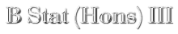

2004-2005
This course deals with nonparametric statistical
inference and sequential methods.
Please check out this page for regular updates and classnotes.
- Teacher: Arnab Chakraborty
- Email:
cwave04 at yahoo dot com
- Office: Room 5.8, fifth floor, new building.
- Class room: 527
- Class time:
- Monday, 10:15--12:00
- Wednesday, 10:15--12:00
- Thursday, 10:15--11:05
- Weight distribution:
- Assignment: 20
- Midterm: 30
- Semestral: 50
- Classical nonparametric methods:
- Standard paired sample, one sample, two sample and k-sample methods.
- U-statistics
- Properties of tests
- Computer-intensive methods:
- Bootstrap
- Cross-validation and CART
- Jackknife
- Sequential inference:
- Dynamic programming
- Sequential testing and SPRT
- Wald's equations, Wald's approximation and fundamental identity
Reference and textbooks etc
- All the classnotes are online. These will constitute your main
reference material. The lecture notes contain many exercises which will be
your assignment problems.
- For the classical nonparametric methods the book by Hollander and
Wolfe is good. It is a fat book, but we shall need only some parts of it.
- The book by Gibbons and Chakraborty is also a standard reference.
- For computer-intensive nonparametric methods the book by Efron and
Tibshirani is a nice book to read.
- There are many excellent books on sequential statistics, however
almost all of them use measure theoretic notations. So they may not be
easily accessible to you. Here are a few standard books on the subject:
- Sequntial statistics by Wald: This is a very old book, written
by one of the fathers of the subject. It is written informally, makes easy
reading, but does not contain modern treatments.
- Sequential statistics by Siegmund: Good modern book. But may not be
easily accessible to you at this stage.
- Great Expectations by Chow , Robbins and Siegmund: Another great book,
but makes heavy use of measure theory.